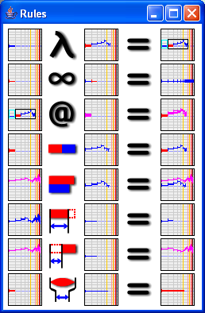
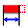

The rule constructor contains most of the basic rules used to build musical objects. These rules need two arguments: the first argument will be dropped in the left box and the second argument in the central box, the result will be available in the right box.
The Lambda constructor allows to build abstractions by dropping in the central box the object you want to generalize and in the left box the "ingredient" you want to make variable in the object. The result is an abstraction, a function which can be applied on a new argument. Functions of several arguments can be defined by abstracting another "ingredient" in a previously defined abstraction.
The Recursive lambda constructor allows to build recursive abstractions by dropping in the central box the object you want to generalize and in the left box the "ingredient" you want to make variable in the object. The result is a "recursive abstraction", an abstraction which behave as the application of the fixed-point Y combinator on the simple abstraction.
The Application constructor allows to build applications of one argument abstraction on one object. You have to drop in the left box the function to be used and in the central box the argument. To apply a multi-argument abstraction, you have to apply it on a first argument, then take the result an apply it on a second argument and so on.
The Sequence constructor allows to build a sequence of two objects. You have to drop the first object in the left box and the second one in the central box.
The Mix constructor allows to mix two objects. The two objects are synchronized at their beginning.
The Begin constructor allows to cut and keep the beginning of an object using the duration of a second object. You have to drop in the left box the object you want to cut and in the central box the object whose duration is used.
The Rest constructor allows to cut and keep the end of an object using the duration of a second object. You have to drop in the left box the object you want to cut and in the central box the object whose duration is used.
The Expand constructor allows to synchronize the duration of two objects. The duration of the left object will be synchronized to the duration of the object in the central box. The left object will be expanded or compressed to match the new duration.
Some on the constructors are also available in the builder.
All rules are reversibles. It means that you can un-construct objects to get their constituents. An object must be dropped on the right (result) box to be un-constructed. For example if a sequence A B object is dropped in the right box of the Sequence constructor, the A argument will appear in the left box, the B in the central box. This is a very powerful feature which allows to understand the history of a musical object construction.
Note: un-constructing objects can also be achieved by double-clicking on them.